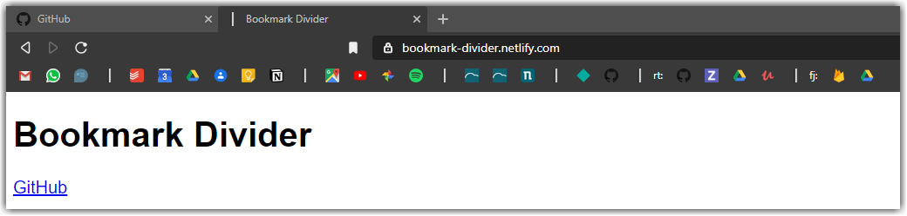
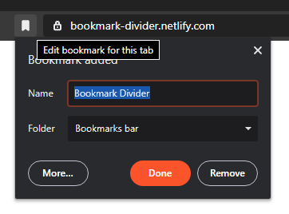
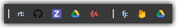

A browser independent bookmark separator (Google Chrome, Firefox, Safari, Internet Explorer, Microsoft Edge). It works perfectly with light and dark themes due to its binary nature.
You can clone this complex repository or just use the hosted version on netlify.
If you have too many bookmarks it can be easier to just use the favicons. But favicons can only be grouped in folders, but that's one additional click. Instead of folders you can just bookmark this page and create as many dividers as you need.



Inspired by FirePanthers https://su.at/archive/bookmark/.